- 00 开篇词 为什么中间件对分布式架构体系来说这么重要？.md
- 01 中间件生态（上）：有哪些类型的中间件？.md
- 02 中间件生态（下）：同类型的中间件如何进行选型？.md
- 03 数组与链表：存储设计的基石有哪些？.md
- 04 红黑树：图解红黑树的构造过程与应用场景.md
- 05 多线程：多线程编程有哪些常见的设计模式？.md
- 06 锁：如何理解锁的同步阻塞队列与条件队列？.md
- 07 NIO：手撸一个简易的主从多Reactor线程模型.md
- 08 Netty：如何优雅地处理网络读写，制定网络通信协议？.md
- 08 加餐 中间件底层的通用设计理念.md
- 09 技术选型：如何选择微服务框架和注册中心？.md
- 10 设计原理：Dubbo核心设计原理剖析.md
- 11 案例：如何基于Dubbo进行网关设计？.md
- 12 案例：如何实现蓝绿发布？.md
- 13 技术选型：如何根据应用场景选择合适的消息中间件？.md
- 14 性能之道：RocketMQ与Kafka高性能设计对比.md
- 15 案例：消息中间件如何实现蓝绿？.md
- 16 案例：如何提升RocketMQ顺序消费性能？.md
- 17 运维：如何运维日均亿级的消息集群？.md
- 18 案例：如何排查RocketMQ消息发送超时故障？.md
- 19 案例：如何排查RocketMQ消息消费积压问题？.md
- 20 技术选型：分布式定时调度框架的功能和未来.md
- 21 设计理念：如何基于ZooKeeper设计准实时架构？.md
- 22 案例：使用分布式调度框架该考虑哪些问题？.md
- 23 案例：如何在生产环境进行全链路压测？.md
- 大咖助阵 高楼：我们应该如何学习中间件？.md
- 用户故事 学而时习之，不亦乐乎.md
- 用户故事 愿做技术的追梦人.md
- 用户故事 浪费时间也是为了珍惜时间.md
- 结束语 坚持不懈，越努力越幸运.md
23 案例：如何在生产环境进行全链路压测？
你好，我是丁威。
不知不觉，我们已经进入了专栏的最后一个板块。这节课，我想给你介绍一下我在全链路压测领域的一些实践经验，让你对中间件相关技术有一个全局的理解。
实际上，全链路压测也是我进入中通负责的第一个项目。当时，我们需要从 0 到 1 打造全链路压测项目，而我对主流中间件的深入了解，在项目的开发和启动过程中发挥了极大的作用，也让作为新人的我在新公司站稳了脚跟。
全链路压测概述
那什么是全链路压测呢？网上关于它的定义有很多，所以我在这里只给出一个可能不太全面，但是比较简单易懂的我的版本：全链路压测就是在生产环境对我们的系统进行压测，压测流量的行进方向和真实用户的请求流量是一致的，也就是说压测流量会完全覆盖真实的业务请求链路。
全链路压测的核心目的是高保真地检测系统的当前容量，方便在大促时科学合理地扩缩容，为合理规划资源提供可视化的数据支撑。
在介绍全链路压测之前，我们先来看一张简易的数据流向图，感受一下我们公司需要落地全链路压测的底层系统的布局情况：
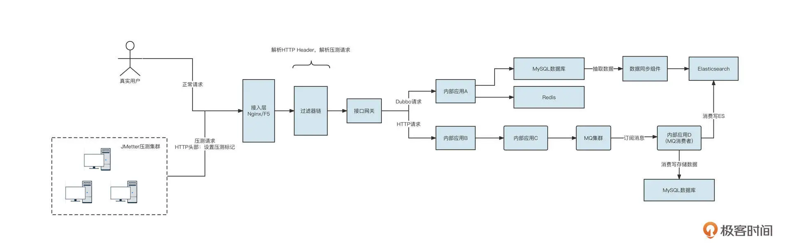
首先，压测端通常采用 JMeter 构建压测请求（HTTP 请求），全链路压测系统需要提供一种机制对真实的业务流量与测试流量加以区分，然后压测流量与真实流量分别进入接入层的负载均衡组件，最终进入接口网关。接口网关再发起 HTTP 或者 Dubbo 等 RPC 请求，进入到内部的业务系统。
内部系统 A 可能会访问 MySQL 数据库或者 Redis，同时存在一些数据同步组件将 MySQL 的数据抽取到 Elasticsearch 中。接着，内部应用 B 可能会继续调用内部应用 C，让 C 发送消息到 MQ 集群。下游的消费者应用消费数据，并访问 Es、MySQL 等存储组件。
我们可以用一张图概括一套完整的全链路压测的基本功能需求：
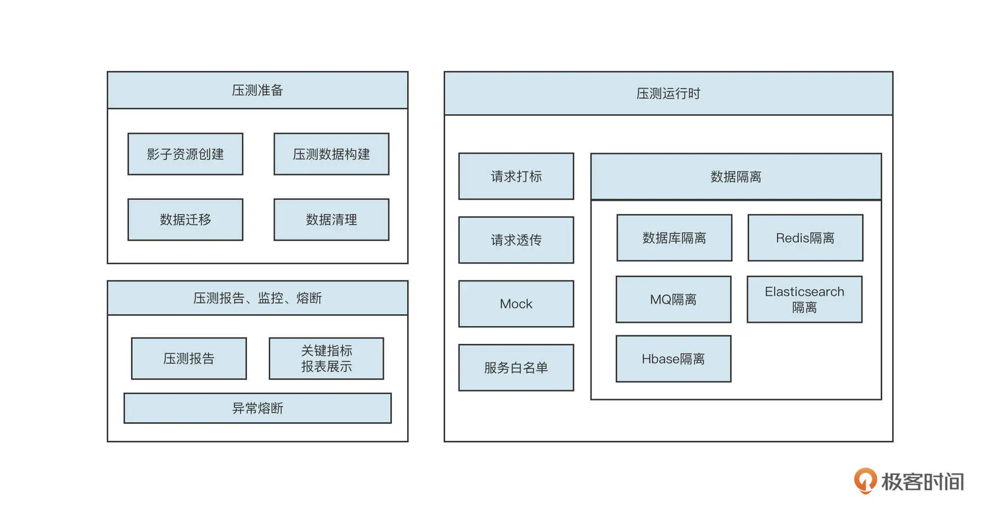
简单解释一下不同阶段的内涵。
- 压测前
主要任务是构建压测数据。全链路压测的核心目标是高保真模拟真实请求。但目前市面上的性能压测实践基本都是通过 JMeter 来人工模拟接口的数据最终生成测试请求的，这样无法反馈用户的真实行为。全链路压测最期望的结果是对真实用户请求日志进行脱敏和清洗，然后将其存入数据仓库中。在真正进行压测时，根据数据仓库中的数据模拟用户的真实行为。
- 压测运行时
主要包括请求打标、透传以及各主流中间件的数据隔离，这是全链路压测的基座。
- 压测后
压测结束后，我们需要生成压测报告并实时监控压测过程，一旦压测过程中系统扛不住，要立马提供熔断压测，避免对生产环境造成影响。
我这节课不会覆盖全链路压测的方方面面，而是主要介绍与中间件关联非常强的流量染色与透传机制和数据隔离机制。
流量染色与透传机制
我们首先来介绍流量染色与透传机制。其中，流量染色的目的就是正确地标记压测流量，确保在系统内部之间进行 RPC 调用、发送 MQ 等操作之后，能够顺利传递压测流量及其标记，确保整个过程中流量标记不丢失。
流量染色与透传机制的设计概要如下：
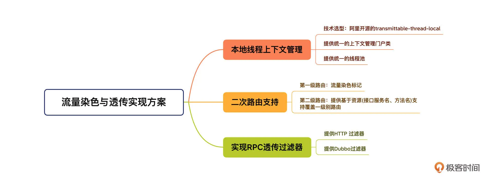
这个机制主要包含三部分，本地线程上下文管理、二次路由支持，还有实现 RPC 透传过滤器。先看第一部分，本地线程上下文管理。
由于流量染色标记需要在整个调用链中传播，在进行数据存储或查询时，都需要根据该标记来路由。所以，为了不侵入代码，把流量染色标记存储在本地线程上下文中是最合适的。
说起本地线程变量，我相信你首先想到的就是 JDK 默认提供的 ThreadLocal，它可以存储整个调用链中都需要访问的数据，而且它的线程是安全的。
但 ThreadLocal 在多线程环境中并不友好，举个例子，在执行线程 A 的过程中，要创建另外一个线程 B 进行并发调用时，存储在线程 A 中的本地环境变量并不会传递到线程 B，这会导致染色标记丢失，带来严重的数据污染问题：
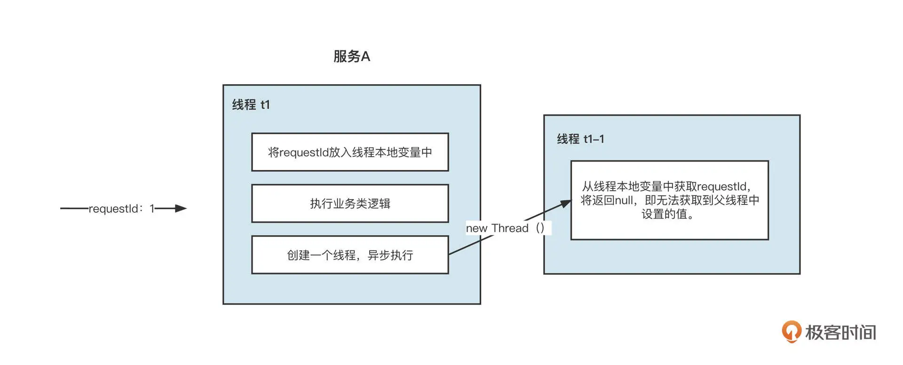
为了解决线程本地变量在线程之间传递的问题，阿里巴巴开源了 transmittable-thread-local 类库，它支持线程本地变量在线程之间、线程池之间进行传递，可以确保多线程环境下本地变量不丢失。
关于本地线程变量的详细调研情况、示例代码，你可以参考我的另一篇文章《线程本地上下文调研实践》。
流量染色与透传机制的第二部分是两次路由支持，它又细分为两级。
第一级路由主要是根据本地线程变量中是否存储了压测标记而进行的路由选择。但在全链路压测的一些场景中，某些服务（特别是像查询基础数据、地址解析这类基础服务）不需要走测试流量。而且测试流量也可以、并且也应该走生产流量，这样可以节省一大笔资源，这就说到了第二级路由。它指的是除了根据压测标记进行路由选择外，我们还需要提供另外一层的路由，即根据配置进行的路由选择，第二级路由的设计图如下：
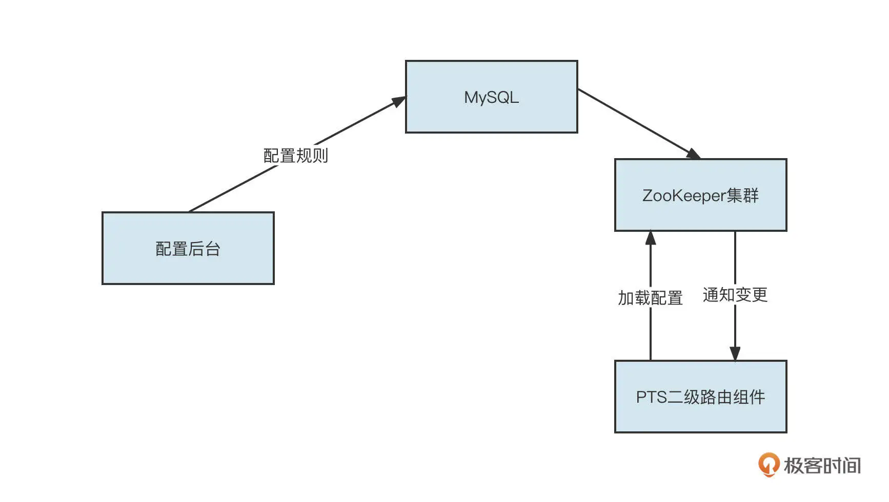
流量染色标记存储到本地线程变量之后，第三步就是要对流量进行透传了。目前，RPC 调用通常指的是 HTTP 请求与 Dubbo 远程调用。
我们来看一个远程 RPC 的服务调用。
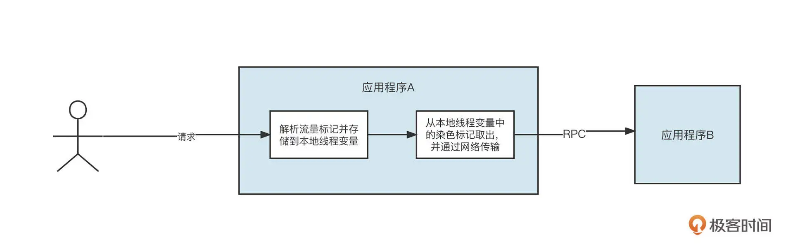
我们要分别针对 HTTP、Dubbo 实现请求标记的透传。
先来说 HTTP。HTTP 中提供了 Web 过滤器机制，它允许我们在真正执行 Controller 层代码之前先执行过滤器。所以我们可以单独定义一个过滤器，从请求中将压测标记存储到本地线程变量中。然后，请求在真正执行业务代码时，就可以非常方便地从本地线程上下文获取染色标记了。示例代码如下：
public class PtWebFilter implements Filter {
private static Logger logger = LoggerFactory.getLogger(PtWebFilter.class);
private static final String PT_HEADER = "_PT_HEADER";
@Override
public void doFilter(ServletRequest servletRequest, ServletResponse servletResponse, FilterChain
filterChain) throws IOException, ServletException {
try {
if(servletRequest instanceof HttpServletRequest) {
HttpServletRequest req = (HttpServletRequest)servletRequest;
String requestType = req.getHeader(PT_HEADER);
if(logger.isDebugEnabled()) {
logger.debug("set requestType before,current requestFlag:{}",
PTLocalContext.shouldAsShadowOp());
logger.debug(String.format("request header requestType:%s", requestType));
}
// 如果请求头中存在压测标记，则将上下文设置为Test请求
if(StringUtil.isNotBlank(requestType) && RequestType.TEST.name().equalsIgnoreCase(requestType))
PTLocalContext.setRequestFlag(RequestType.TEST);
} else { //正式请求，设置其标记为正式请求标记
PTLocalContext.setRequestFlag(RequestType.PROD);
}
}
filterChain.doFilter(servletRequest, servletResponse);
} finally {
PTLocalContext.clear();
}
}
}
这里，代码通过解析 HTTP 的 Header，提取出流量染色标记，并将其存储到本地线程上下文中管理。
那怎样发起 HTTP 请求，将流量染色标记传递到下一个应用呢？
我们项目中是使用 HttpClient 类库实现的 HTTP 调用。HttpClient 提供了拦截器机制，允许我们在发起 HTTP 请求之前，为 HTTP 请求设置对应的 HTTP Header，具体的示范代码如下：
/**
* Http 上下文拦截器，使用HttpClientUtils将当前本地线程上下文环境写入到Http Request Header中，方便被调用方感知它的存在
*/
public class PtHttpClientFilter implements HttpClientFilter {
private static final Logger LOGGER = LoggerFactory.getLogger(PtHttpClientFilter.class);
private static final String PT_HEADER = "_PT_HEADER";
private static final String PT_SERVICE_NAME_KEY = "_PT_SERVICE_NAME_KEY";
@Override
public void doFilter(HttpReqAndRsp httpReqAndRsp,/* HttpResponse httpResponse,*/ HttpClientFilterChain
httpFilterChain) {
String appId = EnvironmentManager.getAppName();
String httpServiceName = (String) httpFilterChain.getAttachment(PT_SERVICE_NAME_KEY);
if (PTLocalContext.shouldAsShadowOp(true)) { // 如果当前环境是测试环境,忽略二级路由
if (!Pt.serviceAvailable(appId, httpServiceName, StubServiceType.HTTP)) {//服务不可用
HttpEntity httpEntity = new StringEntity(stubData, "UTF-8");
HttpResponse httpResponse = new BasicHttpResponse(new ProtocolVersion("http", 1, 1), 200,
"ok");
httpResponse.setEntity(httpEntity);
httpReqAndRsp.setHttpResponse(httpResponse);
} else {//服务可用
//将测试标记、服务名、当前使用的taskName 写入到Header中，实现透传
httpReqAndRsp.getHttpRequest().setHeader(PT_HEADER, RequestType.TEST.name());
httpReqAndRsp.getHttpRequest().setHeader(PT_SERVICE_NAME_KEY,
httpServiceName);
httpFilterChain.doFilter(httpReqAndRsp);
}
} else {//正常请求
//将测试标记写入到Header中，实现透传
httpReqAndRsp.getHttpRequest().setHeader(PT_HEADER, RequestType.PROD.name());
httpFilterChain.doFilter(httpReqAndRsp);
}
}
}
在这里还有一个设计非常重要，那就是服务白名单机制。它的意思是，如果调用一个远程 RPC 服务，而当前流量是测试请求，那么只有白名单中配置的服务才可以发起调用。这主要是为了避免被调用方的服务如果没有接入全链路压测，会不具备流量识别功能，容易将测试请求当成正式请求处理，造成数据污染。
学完 HTTP 的流量透传机制，你可以结合我们讲过的 Dubbo 相关知识思考一下，在 Dubbo 中怎么实现流量透传功能呢？
没错，Dubbo 同样提供了 Filter 机制，在发起或接受请求之前，都可以定义 Filter 来实现同样的功能。
消费者在调用一个 RPC 服务之前，需要将本地线程变量中的流量染色标记通过网络传输到服务端，具体的做法就是将标记放到 RpcContext 中：
@Activate(group = {Constants.CONSUMER}, order = -2000)
public class PtContextOutputFilter implements Filter {
private static final Logger LOGGER = LoggerFactory.getLogger(PtContextOutputFilter.class);
private ConcurrentHashMap<String,Class<?>> returnTypeMap = new ConcurrentHashMap();
private static final String PT_HEADER = "_PT_HEADER";
private static final String PT_SERVICE_NAME_KEY = "_PT_SERVICE_NAME_KEY";
@Override
public Result invoke(Invoker<?> invoker, Invocation invocation) throws RpcException {
String appId = EnvironmentManager.getAppName();
String dubboServiceName = DubboPtUtils.getServiceName(invocation);
// 如果当前本地线程变量的请求标志为Test，并忽略二级路由的影响
if(PTLocalContext.shouldAsShadowOp(true)) {
RpcContext.getContext().setAttachment(PT_HEADER, RequestType.TEST.name());
}
return invoker.invoke(invocation);
}
}
同样，在服务端真正开始处理业务逻辑之前，需要先从 RpcContext 中获取流量染色标记，将其放入本地线程变量中：
@Activate(group = {Constants.PROVIDER}, order = -2000)
public class PtContextInputFilter implements Filter {
private static Logger logger = LoggerFactory.getLogger(PtContextInputFilter.class);
private static final String PT_HEADER = "_PT_HEADER";
@Override
public Result invoke(Invoker<?> invoker, Invocation invocation) throws RpcException {
try {
//从上下文环境中取出测试标记
String requestType = RpcContext.getContext().getAttachment(PT_HEADER);
if(StringUtil.isNotBlank(requestType) && RequestType.TEST.name().equalsIgnoreCase(requestType)) { // 如果是测试流量，则设置请求标记
// 设置请求标记
PTLocalContext.setRequestFlag(RequestType.TEST);
// 设置当前被调用的服务名
String serviceName = DubboPtUtils.getServiceName(invocation);
PTLocalContext.setDubboServiceKey(serviceName);
} else { //如果是正式流量，设置其请求标记为生产流量
PTLocalContext.setRequestFlag(RequestType.PROD);
if(logger.isInfoEnabled()) {
logger.info(String.format("PtContextInputFilter set request flag: prod"));
}
}
return invoker.invoke(invocation);
} finally {
// 清理线程本地资源，避免被污染
PTLocalContext.clear();
}
}
}
数据隔离机制
了解了流量染色和透传机制，接下来我们重点看看各主流中间件的数据存储隔离机制，它是全链路压测的核心基石。
目前常用的数据存储中间件包括：关系型数据库（MySQL/Oracle）、Redis、MQ、Elasticsearch、HBase。
那压测数据和正式请求数据要采用哪种存储方式来避免数据访问混淆呢？这也是数据隔离要重点解决的问题。针对各种存储类中间件，业界已经给出了存储隔离的最佳实践，我总结了一下，画了下面这张思维导图：
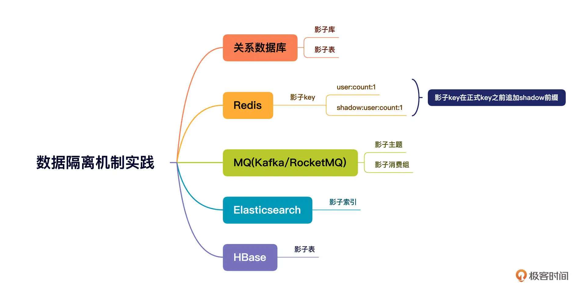
接下来，我们就挑选最具代表性，也是我们这个专栏重点介绍过的数据库、MQ 这两个中间件来介绍一下具体的实现细节。其他的中间件也可以基于这种思路来实现。你可以根据不同中间件提供的客户端 API，对数据请求进行拦截，并根据本地环境变量的值进行路由选择，确保正式请求访问正式资源，测试请求访问影子资源。
数据库层面，通常有两种数据隔离机制，一种是影子库，另外一种是影子表。
我们借着数据库这种场景简单来介绍一下什么是影子库和影子表。你可以先看看下面这张示意图：
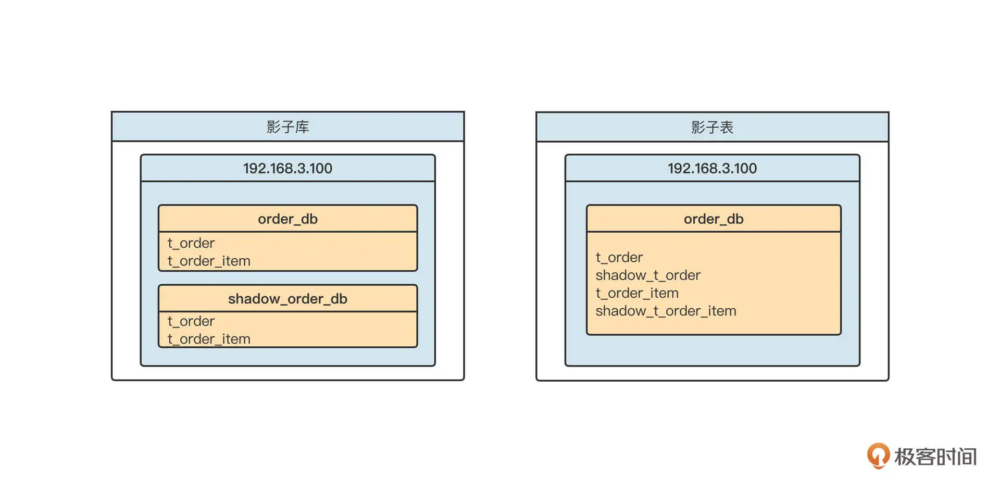
影子表是在同一个 Schema 下为每一个表再创建一个相同结构的表，测试请求访问的是 shadow 开头的表。
影子表的实现非常复杂，一般团队难以驾驭，因为它涉及到复杂的 SQL 语句解析和改写。例如，创建订单，最终写入数据库的 SQL 语句是下面的样子：
insert into t_order(id,order_no,...) values ();
如果判断出是测试请求，我们首先需要解析这条 SQL 语句中的所有表，并将表转化为影子表，再执行这条 SQL 语句。要是碰上连接、多层嵌套 SQL，要正确解析语句会非常困难。
受到团队规模的限制，加上我对 SQL 解析还没有十足的把握，所以我们在实践全链路压测时并没有选择影子表，而是使用了影子库。
无论是 MySQL，还是像 Oracle 这种关系型数据库，基本都是基于 JDBC 的数据源进行数据读写的。在 JDBC 中，每一个 Schema 对应一个数据源（Datasource），根据影子库的设计理念，我们通常需要创建两个数据源对象。如下图所示：
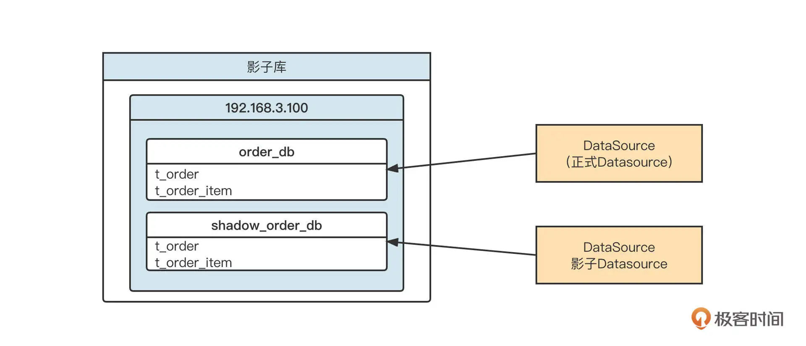
建好两个数据源之后，我们只需要根据当前线程本地环境中存储的流量标记，在需要执行 SQL 语句时选择相对应的数据源，创建对应的数据库连接，再执行 SQL，就可以实现数据的隔离机制了。
那如何优雅地进行路由选择呢？
我们可以借助 Spring-JDBC 提供的 AbstractRoutingDataSource 路由选择机制。它的核心机制如下图所示：
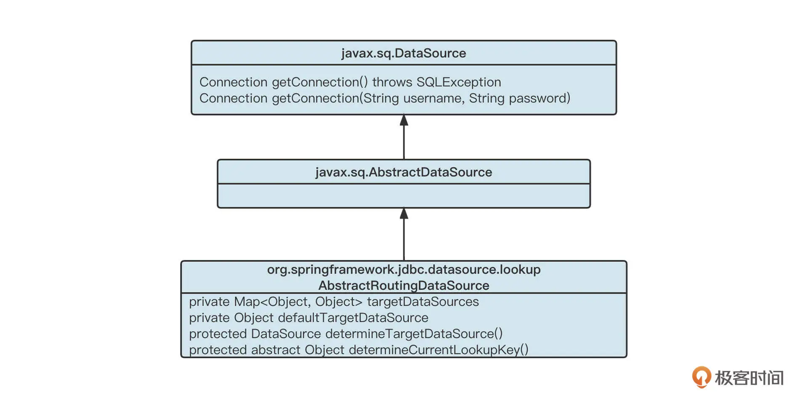
首先，我们会为项目中每一个正式数据源创建一个影子数据源。例如使用 HikariCPDatasource，然后为它创建一个对应的影子数据源，把两个数据源存入到 targetDataSources 集合中，然后再根据本地线程上下文中的流量标记，选择对应的数据源。实现代码如下：
private static final String ORIGIN_KEY = "originKey";
private static final String SHARD_KEY = "shardowkey";
public Object determineCurrentLookupKey() {
if (PTLocalContext.shouldAsShadowOp()) {
return ORIGIN_KEY;
} else {
return SHARD_KEY;
}
}
通过这种方法，我们就轻松实现了数据源的选择，完成了根据流量标记选择对应数据源的任务。
不过，这种方式会带来一个问题。那就是，在压测过程中，每一个正式的数据源会再对应生成一个相同配置的影子消费组，这样数据库服务端的连接数会翻倍。
我们再来看看 MQ 方面如何进行数据隔离。
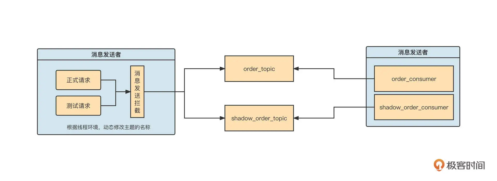
在消息发送端，我们通常通过对原生 SDK 进行封装，通过 AOP 等方法拦截消息发送 API，根据当前流量标记来判断是否需要改写主题名称。如果当前流量标记为压测流量，我们要把主题的名称修改为压测主题，把消息发送到同一消息集群的不同主题中。
当消费端启动时，要为每一个正式消费组再额外创建一个影子消费组，订阅的主题为影子主题。这样，我们就在消费端实现了线程级别的隔离。影子消费组的线程本地变量默认为测试流量，然后沿着消息的消费传递影子标记。
在全链路压测这个场景，为了不影响没有接入全链路压测的应用，使用影子主题与消费组基本是唯一的解法。因为没有接入全链路的消费组是无法感知到影子主题中的消息的，这就把边界控制在了合理的范围中：
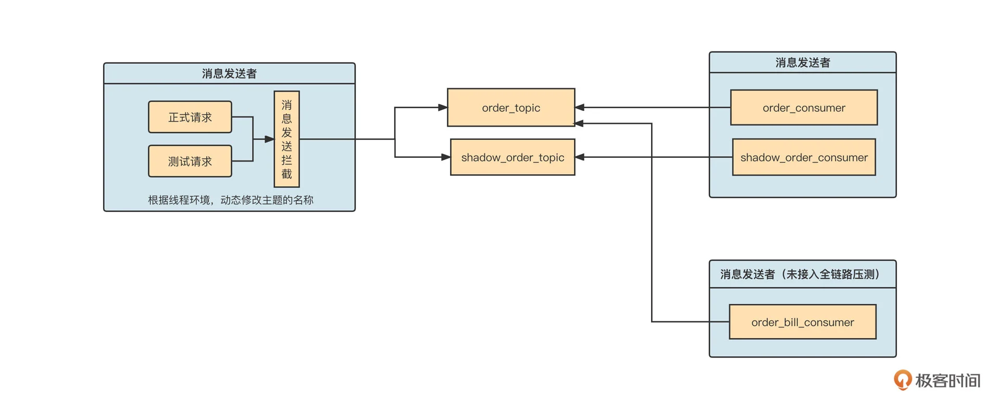
当上游消息发送接入全链路压测时，如果流量是测试请求，消息会发送到影子主题。但是下游如果有应用暂时未接入全链路压测，应用就不会自动创建影子消费组，也不会去订阅影子主题，避免了多余的影响。
总结
好了，我们这节课就讲到这里了。
我们这节课开篇就解释了全链路压测的概念。我还结合一张生产环境数据流向图，引出了压测前、压测运行时、压测结束三个阶段的功能需求，重点介绍了流量染色与透传机制和主流中间件的数据隔离机制。
在流量染色部分，我们重点提到了使用线程本地变量存储染色标记的方法，并采用阿里巴巴开源的 transmittable-thread-local 类库，在多线程环境下安全地传递了染色标记。然后，我们又分别针对 HTTP 请求与 Dubbo RPC 请求，讲解了让请求标记在进程之间传递的方法。
最后，我们还学习了主流中间件的数据隔离机制，了解了数据库影子库、消息中间件的影子主题、影子消费组的具体落地思路。
课后题
学完这节课，给你留一道思考题。
全链路压测中，一个最容易出现的问题就是流量标记的丢失。你知道为什么 JDK 自带的 ThreadLocal 无法在多线程环境中传递吗？那阿里开源的 transmittable-thread-local 又是怎么支持多线程环境下本地线程变量的自动传递的呢？
欢迎你在留言区与我交流讨论，我们下节课再见！
© 2019 - 2023 Liangliang Lee. Powered by Vert.x and hexo-theme-book.